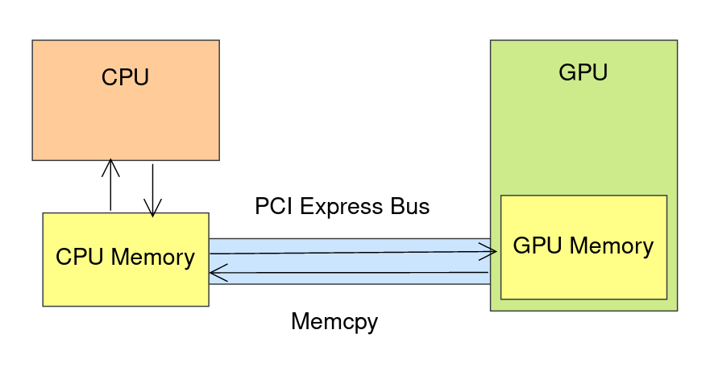

SYCL and the SYCL logo are trademarks of the Khronos Group Inc.
## A Quick Introduction to SYCL
## Learning Objectives
* Quick SYCL introduction
* Writing a one-page application
#### What is SYCL?

SYCL is a single source, high-level, standard C++ programming model, that can target a range of heterogeneous platforms
#### What is SYCL?
A first example of SYCL code.
#### SYCL Key concepts
* SYCL is a C++-based programming model:
* Device code and host code exist in the same file
* Device code can use templates and other C++ features
* Designed with "modern" C++ in mind
* SYCL provides high-level abstractions over common boilerplate code
* Platform/device selection
* Buffer creation and data movement
* Kernel function compilation
* Dependency management and scheduling
#### SYCL System Topology
* A SYCL application can execute work across a range of different heterogeneous devices.
* The devices that are available in any given system are determined at runtime through topology discovery.
#### Platforms and devices
* The SYCL runtime will discover a set of platforms that are available in the system.
* Each platform represents a backend implementation such as Intel OpenCL or Nvidia CUDA.
* The SYCL runtime will also discover all the devices available for each of those platforms.
* CPU, GPU, FPGA, and other kinds of accelerators.

#### Querying with a device selector

* To simplify the process of traversing the system topology SYCL provides device selectors.
* A device selector is is a callable C++ object which defines a heuristic for scoring devices.
* SYCL provides a number of standard device selectors, e.g. `default_selector_v`, `gpu_selector_v`, etc.
* Users can also create their own device selectors.
#### Querying with a device selector
auto gpuDevice = device(gpu_selector_v);

* A device selector takes a parameter of type `const device &` and gives it a "score".
* Used to query all devices and return the one with the highest "score".
* A device with a negative score will never be chosen.
#### SYCL Queues

* Commands are submitted to devices in SYCL by means of a Queue
* SYCL `queue`s are by default out-of-order.
* This means commands are allowed to be overlapped, re-ordered, and executed concurrently, providing dependencies are honoured to ensure consistency.
#### In-order execution

* SYCL `queue`s can be configured to be in-order.
* This mean commands must execute strictly in the order they were enqueued.
#### Memory Models
* In SYCL there are two models for managing data:
* The buffer/accessor model.
* The USM (unified shared memory) model.
* Which model you choose can have an effect on how you enqueue kernel functions.
#### CPU and GPU Memory
* A GPU has its own memory, separate to CPU memory.
* In order for the GPU to use memory from the CPU, the following actions must take place (either explicitly or implicitly):
* Memory allocation on the GPU.
* Data migration from the CPU to the allocation on the GPU.
* Some computation on the GPU.
* Migration of the result back to the CPU.

#### SYCL Buffers & Accessors
* The buffer/accessor model separates the storage and access of data
* A SYCL buffer manages data across the host and any number of devices
* A SYCL accessor requests access to data on the host or on a device for a specific SYCL kernel function
* Accessors are also used to access data within a SYCL kernel function
* This means they are declared in the host code but captured by and then accessed within a SYCL kernel function
#### SYCL Buffers & Accessors
* When a buffer object is constructed it will not allocate or copy to device memory at first
* This will only happen once the SYCL runtime knows the data needs to be accessed and where it needs to be accessed

#### SYCL Buffers & Accessors
* Constructing an accessor specifies a request to access the data managed by the buffer
* There are a range of different types of accessor which provide different ways to access data

#### Accessing Data With Accessors
buffer<float, 1> bufA(dA.data(), range<1>(dA.size()));
buffer<float, 1> bufB(dB.data(), range<1>(dB.size()));
buffer<float, 1> bufO(dO.data(), range<1>(dO.size()));
gpuQueue.submit([&](handler &cgh){
sycl::accessor inA{bufA, cgh, sycl::read_only};
sycl::accessor inB{bufB, cgh, sycl::read_only};
sycl::accessor out{bufO, cgh, sycl::write_only};
cgh.parallel_for<add>(range<1>(dA.size()),
[=](id<1> i){
out[i] = inA[i] + inB[i];
});
});
* Here we access the data of the `accessor` by
passing in the `id` passed to the SYCL kernel
function.
#### USM: Malloc_device
void* malloc_device(size_t numBytes, const queue& syclQueue, const property_list &propList = {});
template <typename T>
T* malloc_device(size_t count, const queue& syclQueue, const property_list &propList = {});
* A USM device allocation is performed by calling one of the `malloc_device` functions.
* Both of these functions allocate the specified region of memory on the `device` associated with the specified `queue`.
* The pointer returned is only accessible in a kernel function running on that `device`.
* Synchronous exception if the device does not have aspect::usm_device_allocations
* This is a blocking operation.
#### USM: Free
void free(void* ptr, queue& syclQueue);
* In order to prevent memory leaks USM device allocations must be free by calling the `free` function.
* The `queue` must be the same as was used to allocate the memory.
* This is a blocking operation.
#### USM: Memcpy
event queue::memcpy(void* dest, const void* src, size_t numBytes, const std::vector &depEvents);
* Data can be copied to and from a USM device allocation by calling the `queue`'s `memcpy` member function.
* The source and destination can be either a host application pointer or a USM device allocation.
* This is an asynchronous operation enqueued to the `queue`.
* An `event` is returned which can be used to synchronize with the completion of copy operation.
* May depend on other events via `depEvents`
#### SYCL execution model
* SYCL kernel functions are executed by **work-items**
* You can think of a work-item as a thread of execution
* Each work-item will execute a SYCL kernel function from start to end
* A work-item can run on CPU threads, SIMD lanes, GPU threads, or any other kind of processing element

#### SYCL execution model
* Work-items are collected together into **work-groups**
* The size of work-groups is generally relative to what is optimal on the device being targeted
* It can also be affected by the resources used by each work-item

#### SYCL execution model
* SYCL kernel functions are invoked within an **nd-range**
* An nd-range has a number of work-groups and subsequently a number of work-items
* Work-groups always have the same number of work-items

#### SYCL execution model
* The nd-range describes an **iteration space**: how it is composed in terms of work-groups and work-items
* An nd-range can be 1, 2 or 3 dimensions
* An nd-range has two components
* The **global-range** describes the total number of work-items in each dimension
* The **local-range** describes the number of work-items in a work-group in each dimension

#### Expressing parallelism
cgh.parallel_for<kernel>(range<1>(1024),
[=](id<1> idx){
/* kernel function code */
});
cgh.parallel_for<kernel>(range<1>(1024),
[=](item<1> item){
/* kernel function code */
});
cgh.parallel_for<kernel>(nd_range<1>(range<1>(1024),
range<1>(32)),[=](nd_item<1> ndItem){
/* kernel function code */
});
* Overload taking a **range** object specifies the global range, runtime decides local range
* An **id** parameter represents the index within the global range
____________________________________________________________________________________________
* Overload taking a **range** object specifies the global range, runtime decides local range
* An **item** parameter represents the global range and the index within the global range
____________________________________________________________________________________________
* Overload taking an **nd_range** object specifies the global and local range
* An **nd_item** parameter represents the global and local range and index
#### SYCL Kernels
* SYCL kernels (i.e. the device function the programmer wants
executed) are expressed either as C++ function objects or lambdas.
* Comparing with other GPU paradigms, kernel arguments are either
data members or lambda captures, respectively
* For function objects, the member function `operator()(sycl::id)`
is the compute function, which is equivalent to the lambda style
// then add slides explaining the practical work and how to
// glue it all together from scratch
#### Function object
```c++
class MyKernel {
sycl::accessor input_;
float* output_;
MyKernel(sycl::buffer buf, float* output, sycl::handler& h)
: input{buf.get_access(h)}, output_{output} {}
// const is required
void operator()(sycl::item<1> i) const {
; // computation here
}
};
```
The members are accessible on the device inside the function call
operator.
#### Lambda function
```c++
sycl::buffer buf = /* normal init */;
float * output = sycl::malloc_device(/* params */);
... queue submit as normal ...
auto acc = buf.get_access(h);
auto func = [=](sycl::item<1> i) {
acc[i] = someVal;
output[i.get_global_linear_id()] = someOtherVal;
});
handler.parallel_for(range, func);
```
The variables used implicitly are captured by value and are usable in
the kernel.
#### SYCL Kernels
* These forms are equivalent (as in normal C++) and which one to use
depends on preference and use case
* Each instance of the kernel has a uniquely valued `sycl::item`
describing its position in the iteration space as covered in
"SYCL execution model"
* Can be used to index into accessors, pointers etc.
#### First Exercise
* Use Data Parallelism and write a SYCL kernel
* The exercise README is in the "Code_Exercises/Data_Parallelism" folder
* Follow the guidelines in the README and comments in the source.cpp file
* There is a solution file but only use it if you need to